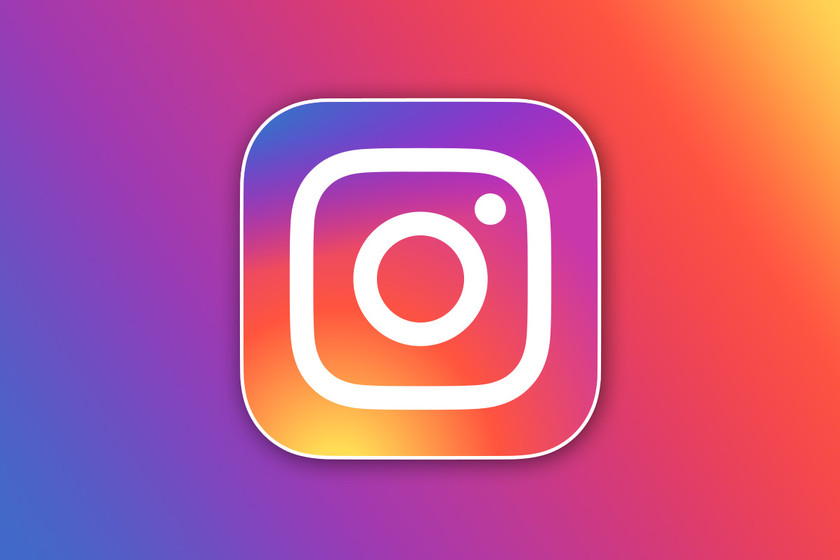

Línea del Tiempo de las Redes Sociales
2003 - MySpace
Una de las primeras redes sociales en ganar popularidad a nivel mundial. Permitía personalizar perfiles y compartir música.
2004 - Facebook
Creado por Mark Zuckerberg, Facebook revolucionó la forma en la que las personas se conectan en línea.

2006 - Twitter
Introdujo los mensajes cortos o "tweets", y se convirtió en una herramienta clave para la comunicación en tiempo real.
2010 - Instagram
Una red centrada en la fotografía y el contenido visual. Popularizó los filtros y las historias.

2016 - TikTok
Se volvió viral por sus vídeos cortos y contenido generado por usuarios. Atrae especialmente a las generaciones más jóvenes.